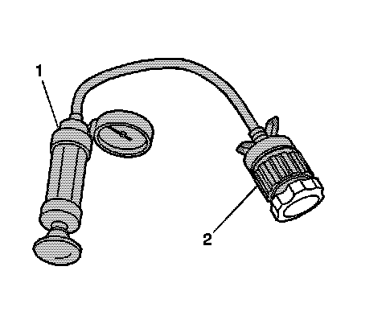

Radiator Cap: Testing and Inspection
Pressure Cap Testing
Tools required
^ J 24460-01 Cooling System Pressure Tester
^ J 42401 Radiator Cap / Surge Tank Test Adapter
Pressure Cap Testing
Caution: To avoid being burned, do not remove the radiator cap or surge tank cap while the engine is hot. The cooling system will release scalding fluid and steam under pressure if radiator cap or surge tank cap is removed while the engine and radiator are still hot.
1. Remove the pressure cap.
2. Wash the pressure cap sealing surface with water.

3. Use the J 24460-01 (1) with J 42401 (2) in order to test the pressure cap.
4. Test the pressure cap for the following conditions:
^ Pressure release when the J 24460-01 exceeds the pressure rating of the pressure cap.
^ Maintain the rated pressure for at least 10 seconds.
Note the rate of pressure loss.
5. Replace the pressure cap under the following conditions:
^ The pressure cap does not release pressure which exceeds the rated pressure of the cap.
^ The pressure cap does not hold the rated pressure.